Ferramentas
inteligentes
para Windows.
Ferramentas inteligentes para Windows que resolvem problemas reais do dia a dia. Cada aplicativo apresenta claramente sua disponibilidade e suas condições de uso.

VozDigitada
DisponívelTransforme sua voz em texto no campo ativo de qualquer programa. Atalhos de teclado, Enter automático, dicionário inteligente e balão flutuante.

DriverStatus
DisponívelDiagnostica drivers do seu PC, identifica problemas e sugere soluções. Integra com Windows Update, backup de drivers e facilita a interação com a IA.
Em breve...
DesenvolvimentoNovo aplicativo em desenvolvimento. Fique atento para novidades!
De problemas reais, nascem soluções reais
Sou programador e crio ferramentas que eu mesmo uso no dia a dia. Quando encontro um problema que não tem boa solução gratuita, eu construo uma.
O VozDigitada nasceu porque eu precisava ditar texto sem pagar assinatura — um app simples que transforma voz em texto em qualquer programa, com Enter automático e comandos de voz.
O DriverStatus nasceu porque diagnosticar e cuidar do Windows pode ser confuso — um app que reúne dispositivos, drivers, limpeza, serviços, inicialização, tarefas, backup e restauração em uma interface clara.
O VozDigitada e o DriverStatus são gratuitos. Outros aplicativos podem ter condições próprias, sempre informadas claramente em suas páginas.
❤️ Gostou? Apoie o projeto!
O VozDigitada e o DriverStatus são gratuitos e sem anúncios.
Se eles te ajudam no dia a dia, considere fazer uma doação de qualquer valor.
Pix
Cartão de Crédito / Débito

Pagamento seguro via Mercado Pago.
Você será redirecionado para o site oficial.
PayPal
Pagamento seguro via PayPal.
Você será redirecionado para o site oficial.
Fale Comigo
Meu objetivo é criar ferramentas que melhorem seu dia a dia.
Se tiver alguma dúvida, sugestão ou precisar de ajuda,
ficarei feliz em responder!
Carregando versão...
Transforme sua voz em texto
instantaneamente.
O VozDigitada transforma sua voz em texto no campo ativo de outros aplicativos. Use atalhos configuráveis, Enter automático ou os comandos “Voz parar” e “Voz enviar”. O dicionário aprende correções e o pequeno balão acima da barra de tarefas mostra cada etapa da gravação.
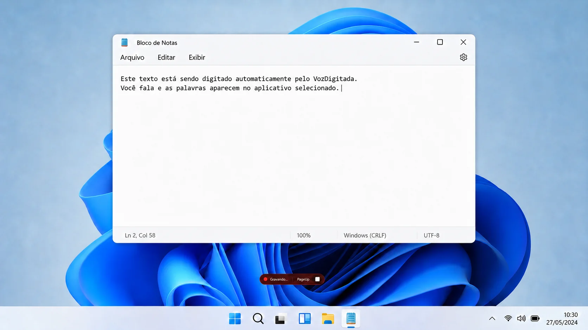
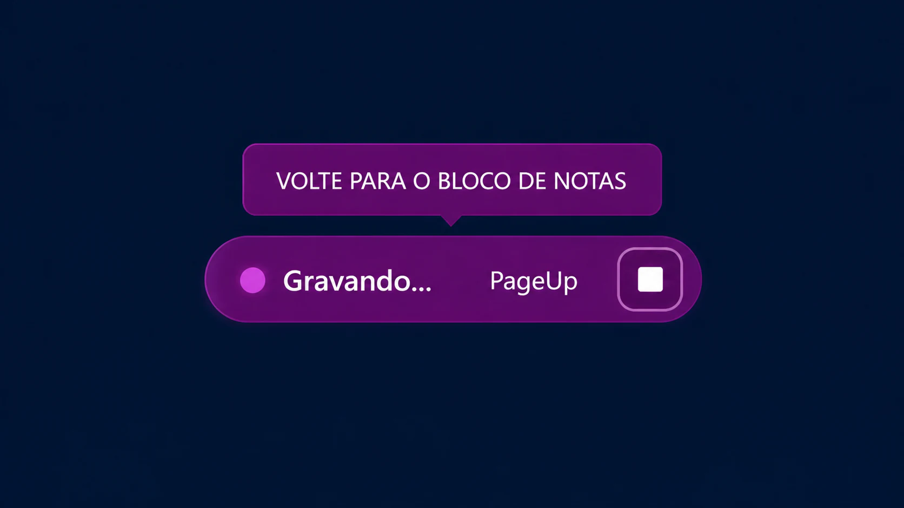
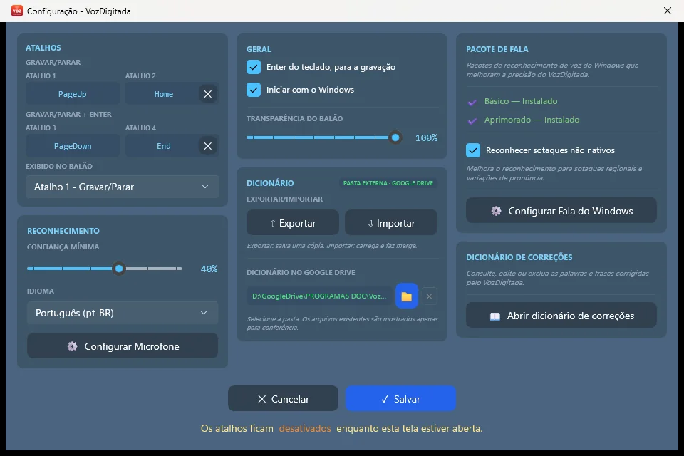
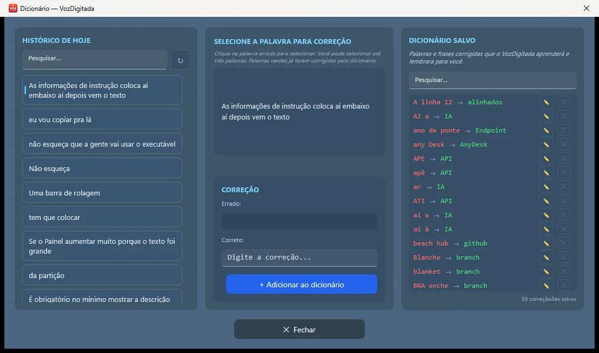
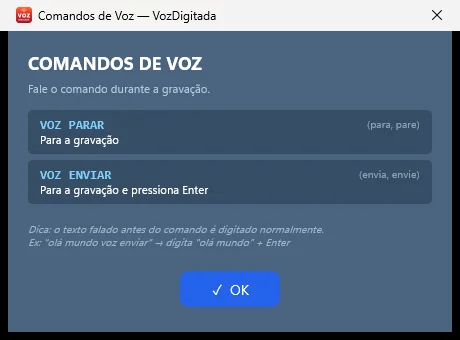
Demonstração da gravação e capturas reais das principais telas do VozDigitada.
Ditado no Campo Ativo
Reconhece sua fala com os componentes do Windows e insere o texto no aplicativo em uso.
Quatro Atalhos
Personalize as quatro combinações de teclado disponíveis diretamente nas configurações.
Enter Automático
Use o modo que encerra a gravação e envia o texto, sem precisar tocar no teclado novamente.
Comandos de Voz
Durante a gravação, diga “Voz parar” para encerrar ou “Voz enviar” para encerrar e pressionar Enter.
Reconhecimento Ajustável
Escolha a confiança mínima, o idioma, o microfone e o reconhecimento de sotaques não nativos.
Pacotes de Fala
Consulte e instale componentes Básico ou Aprimorado para adequar o reconhecimento ao computador.
Dicionário de Correções
Cadastre palavras ou pequenas frases, consulte o histórico e edite ou exclua cada correção.
Exportação e Sincronização
Exporte, importe ou escolha uma pasta sincronizada para manter uma cópia do dicionário.
Balão de Status
O pequeno indicador fica acima da barra de tarefas, mostra gravação ou retorno ao app e pode ser reposicionado.
Bandeja do Windows
O aplicativo permanece discreto na bandeja, com menu para todas as ações e opção de iniciar com o Windows.
Atualizações
Verifique novas versões pelo próprio menu e acompanhe o processo de instalação.
Proteção Durante a Configuração
Os atalhos ficam temporariamente bloqueados enquanto a janela de configuração está aberta.
Ele foi criado para digitar no campo ativo de aplicativos do Windows, como navegadores, editores, e-mail, ERPs e campos de busca. Basta posicionar o cursor antes de iniciar; as permissões do próprio Windows continuam valendo.
O ditado usa os componentes de fala instalados no Windows e pode funcionar offline. A internet é necessária para baixar componentes de fala, consultar ou instalar atualizações.
Atualmente, o VozDigitada é gratuito, sem limite de palavras, sem assinatura, sem período de teste e sem anúncios.
A tela de configurações oferece quatro atalhos personalizáveis. Entre os modos disponíveis há gravação normal e gravação com envio por Enter, útil em conversas, buscas e outros campos de texto.
Durante a gravação, diga “Voz parar” para encerrar ou “Voz enviar” para encerrar e pressionar Enter. Não existe comando “Voz gravar”: a gravação começa pelos atalhos configurados.
Quando o reconhecimento erra uma palavra ou pequena frase, você cadastra a forma correta. Também é possível pesquisar o histórico, editar, excluir, exportar, importar e escolher uma pasta sincronizada para o dicionário.
São componentes de fala do Windows usados pelo aplicativo. Nas configurações você pode consultar as opções Básico e Aprimorado, o idioma português do Brasil e o reconhecimento de sotaques não nativos.
O balão roxo aparece quando o foco saiu do aplicativo em que a gravação foi iniciada. Volte ao campo original para o VozDigitada concluir a ação no lugar correto.
O reconhecimento usa os componentes de fala do Windows no seu computador. Acesso à internet ocorre apenas em funções que precisam dele, como download de componentes e atualização do aplicativo.
⬇️ VozDigitada para Windows
Carregando versão...
Download disponível
Diagnostique seus drivers
em segundos.
O DriverStatus reúne diagnóstico de dispositivos e manutenção segura do Windows: drivers opcionais, arquivos temporários, serviços, inicialização, tarefas agendadas, registros desconectados, pacotes antigos, backup, ponto de restauração e especificações do computador.
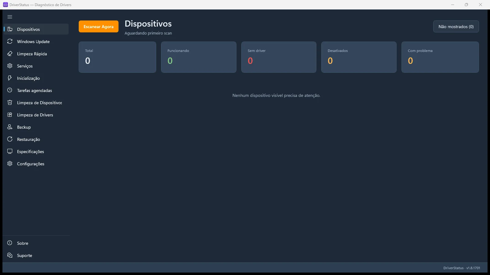
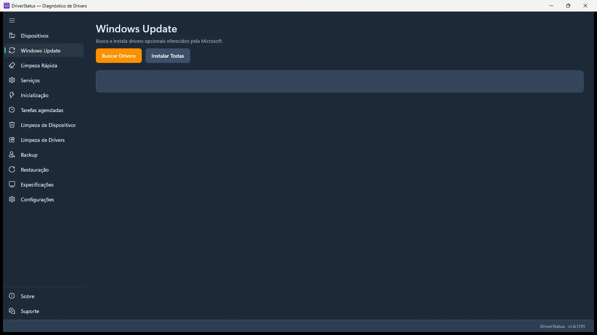
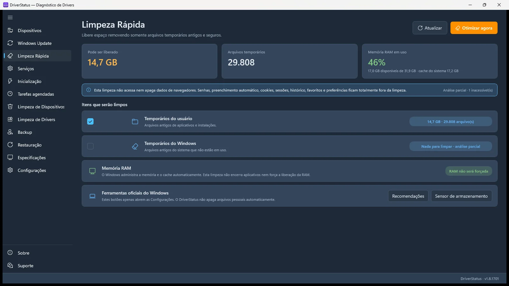
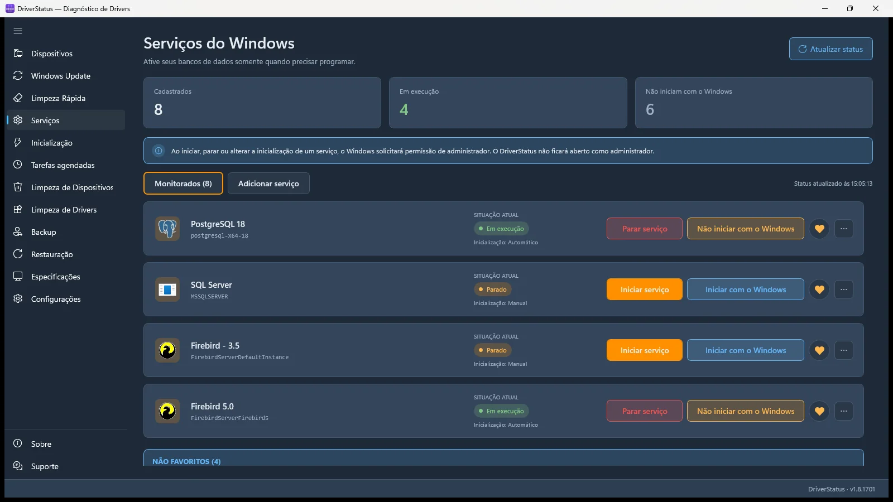
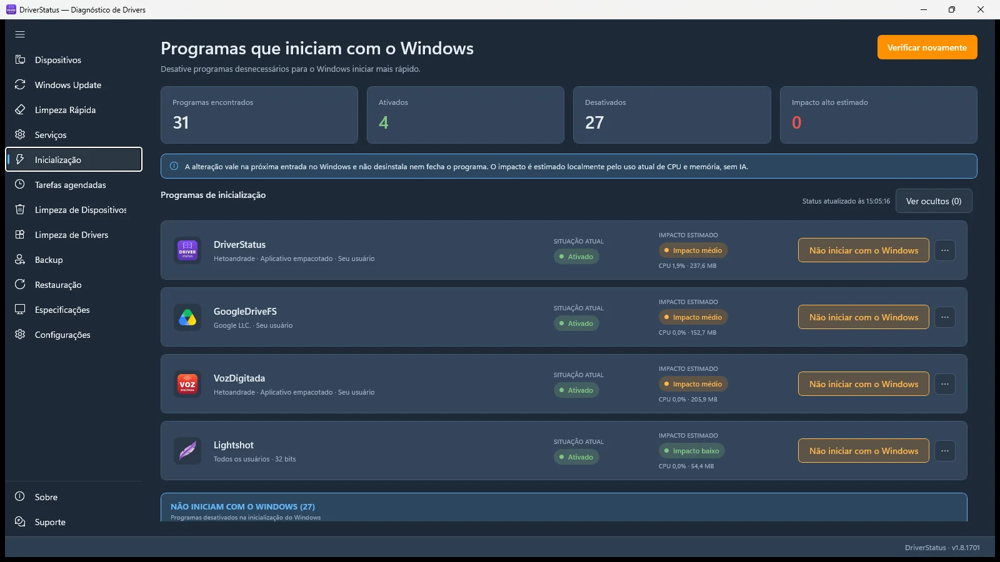
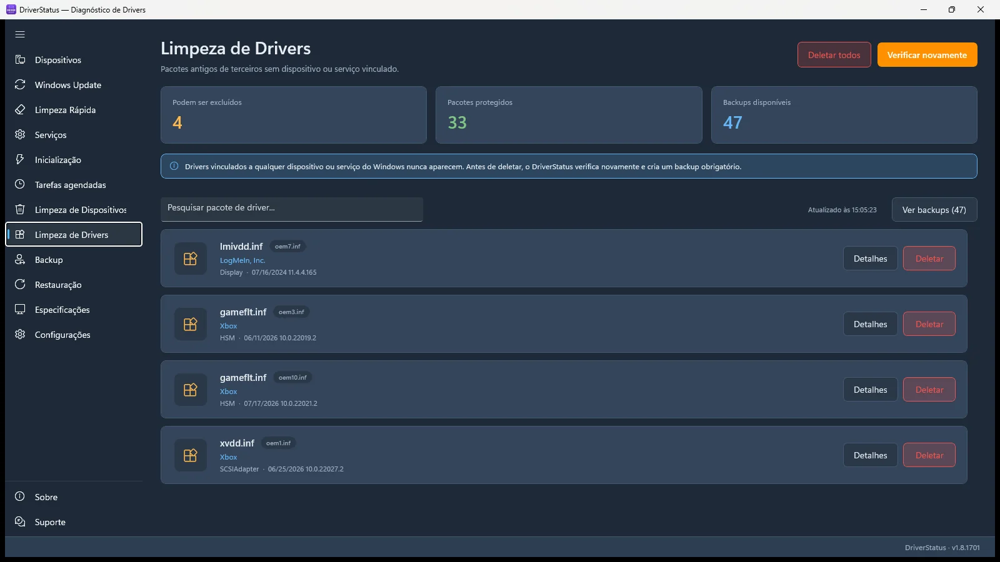
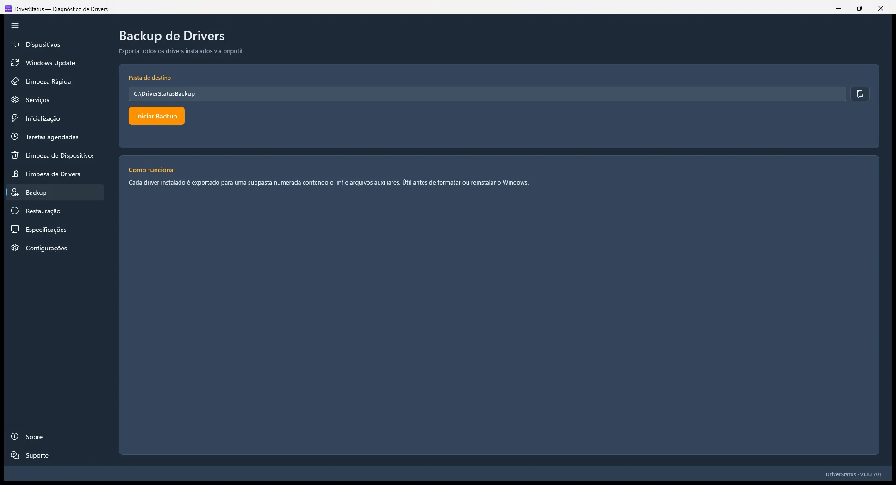
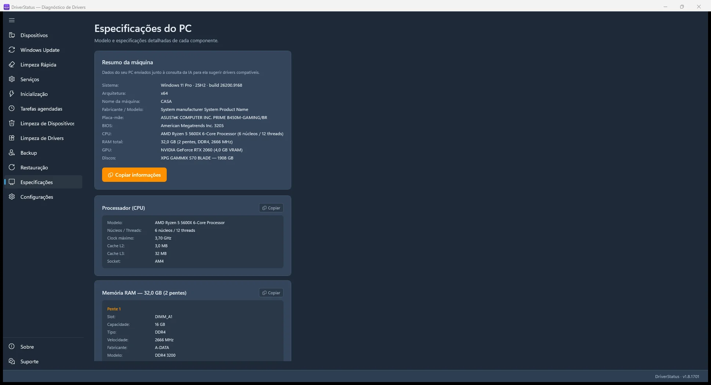
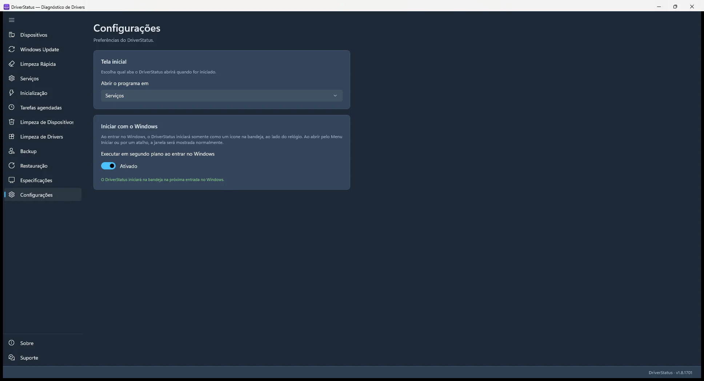
Capturas reais das principais funcionalidades do DriverStatus.
Diagnóstico de Dispositivos
Escaneia o hardware via WMI e separa dispositivos funcionando, sem driver, desativados ou problemáticos.
Drivers do Windows Update
Lista drivers opcionais e permite instalar um item ou todos os selecionados, com aviso quando for preciso reiniciar.
Limpeza Rápida
Remove arquivos temporários antigos de forma conservadora, sem apagar dados de navegadores ou forçar limpeza de memória.
Serviços do Windows
Monitore serviços escolhidos e, quando permitido, inicie, pare ou ajuste o modo de inicialização.
Programas de Inicialização
Habilite ou desabilite entradas sem desinstalar programas e consulte uma estimativa local de impacto.
Tarefas Agendadas
Gerencie tarefas editáveis; itens protegidos do Windows são identificados e permanecem somente para consulta.
Dispositivos Desconectados
Oculta ou remove registros de hardware ausente. Essa limpeza não apaga o pacote do driver.
Limpeza Protegida de Drivers
Mostra somente pacotes de terceiros sem dispositivo ou serviço ativo e exige backup antes da exclusão.
Backup de Drivers
Exporta os drivers instalados com a ferramenta oficial do Windows para a pasta que você escolher.
Ponto de Restauração
Oferece uma página própria para criar um ponto de restauração do sistema antes de mudanças importantes.
Especificações do PC
Organiza informações do Windows, processador, memória, placa-mãe, vídeo, armazenamento e rede.
Configurações e Bandeja
Escolha a página exibida ao abrir e, se quiser, inicie o aplicativo com o Windows minimizado na bandeja.
Pesquisa e Assistência por IA
Prepara informações técnicas e abre ChatGPT, Gemini, Google ou a origem oficial para ajudar na investigação.
Proteções nas Ações Sensíveis
Itens ativos ou protegidos não são oferecidos para exclusão, e o Windows solicita elevação quando necessário.
Atualização e Suporte
Consulte novas versões pelo aplicativo e acesse os canais de suporte em páginas dedicadas.
Ele complementa. O DriverStatus reúne o diagnóstico dos dispositivos com atalhos de pesquisa e várias ferramentas de manutenção em uma interface mais orientada. O Gerenciador de Dispositivos continua sendo uma ferramenta do Windows.
O diagnóstico básico não precisa manter o aplicativo sempre como administrador. Quando uma ação protegida exige mais permissão — por exemplo, alterar serviços, tarefas ou drivers — o Windows solicita elevação.
A instalação usa os drivers opcionais oferecidos pelo próprio Windows Update. Confira o item antes de instalar; o aplicativo também oferece uma ferramenta separada para criar um ponto de restauração.
Ela procura arquivos temporários antigos em locais seguros. Não limpa dados dos navegadores e não promete “liberar RAM”; também oferece atalhos para ferramentas oficiais de armazenamento do Windows.
A limpeza de dispositivos trata registros de hardware desconectado e não apaga o pacote do driver. A limpeza de drivers trata pacotes de terceiros sem dispositivo ou serviço ativo e exige um backup antes da exclusão.
As tarefas protegidas do Windows aparecem somente para consulta. Nos programas de inicialização, desabilitar uma entrada não desinstala nem fecha o aplicativo. Ainda assim, revise qualquer mudança antes de confirmar.
O DriverStatus prepara as informações técnicas e abre o ChatGPT ou o Gemini no navegador. Você decide se vai colar e enviar o conteúdo; não há análise automática escondida dentro do aplicativo.
Não. O backup exporta os drivers instalados para uma pasta. O ponto de restauração registra o estado do Windows para recuperação do sistema. São proteções diferentes e complementares.
O diagnóstico é processado no computador. Funções online só são abertas quando você escolhe pesquisar, consultar atualização ou usar um serviço externo; nesse caso, valem as regras do site aberto no navegador.
⬇️ DriverStatus para Windows
Versão mais recente
Softwares de
terceiros
que eu recomendo.
Aplicativos que eu mesmo uso e indico no dia a dia, com opções gratuitas para uso pessoal. Links diretos para os sites oficiais — nada modificado, nada com anúncios. Esses softwares não são desenvolvidos por mim — cada um tem sua própria licença e suporte.

AnyDesk
Acesso RemotoAcesso remoto rápido e leve. Uso pra dar suporte a clientes — instala em 1 minuto, gera um código de 9 dígitos e pronto. Grátis pra uso pessoal.
⬇️ Baixar do site oficial
7-Zip
CompactadorCompactador de arquivos open-source. Suporta ZIP, RAR, 7z, TAR, GZ e mais. Substituto perfeito do WinRAR — grátis de verdade, sem "compre a licença" eterno.
⬇️ Baixar do site oficial
Notepad++
Editor de TextoEditor de texto turbinado. Abre arquivos grandes sem travar, syntax highlight pra dezenas de linguagens, find & replace com regex. O bloco de notas do Windows nem chega perto.
⬇️ Baixar do site oficial
Lightshot
Captura de TelaFerramenta leve para capturar uma área da tela em poucos cliques. Permite editar a imagem na hora e gerar rapidamente um link para compartilhar.
⬇️ Baixar do site oficial
pgAdmin
Admin PostgreSQLFerramenta gráfica oficial pra administrar bancos PostgreSQL. Roda queries, edita tabelas, faz backup/restore, gerencia usuários. Open source — mantida pela própria comunidade do Postgres.
⬇️ Baixar do site oficial
DBeaver Community
Gerenciador de BancosGerenciador universal de bancos de dados. Conecta ao PostgreSQL, MySQL, SQL Server, SQLite e muitos outros, com editor SQL, dados e diagramas.
⬇️ Baixar do site oficial